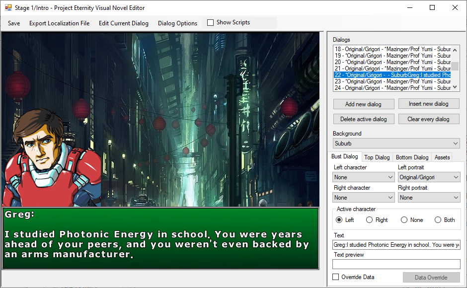
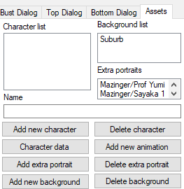

Visual Novels Editor
You can create dialog panels, select portraits, backgrounds, do some scripting, change music and change where the camera will move on its own.
The bust dialog is for full picture portrait or animations created with the animation editor. Top and bottom dialog are for classic old school dialog with a small picture and work the same and won’t be covered.
The asset tab is where you’ll populate the dropdowns from the other tabs.
Checking the Show Scripts box will allow you to reorder dialogs and do non linear dialog.
For a more in depth guide, go here.
Export Localization file: Export the visual novel as text to make it easier for other people to translate.
Edit Current Dialog: Open a dialog that allow you to use cutscenes directly from inside the VN editor.
Dialog Options: Select BGM or SFX to play when reaching that dialog. It will actually create a play BGM and SFX script inside a cutscene and can be accessed from the Edit Current Dialog menu as well.
Dialogs: The list of the dialog created with a summary text that following this logic: [Order number] - [* if talking][Left character] - [* if talking][Right character] - [Background] – [Text]. Keep an eye on the order number if you move dialog in the scripts section.
Bust Dialog: Choose who you want to be talking and on which side. Clicking in the Text texbox will open a new window to properly be able to write multiple lines. The text preview is only used if linking multiple dialog from the script menu.
Override Data: Normally if you choose a character to talk the camera will automatically move on it or wherever it was customized to but you can override that behavior to make it move to a different place or not move at all.
Assets: List of assets to use in the VN. You need to fill it before doing anything
Add new Character: Add a character to the list.
Character Data: Customize where the camera will go when the character is talking. For example where to put the camera if the character is not on the map.
Add new animation: Add an animation as an extra portrait. You’ll have to ensure the animation origin is at the right place but the engine will flip it and shadow it for you as needed.
Add extra portrait: Add a sprite as an extra portrait. If you’re not using characters extra portraits are the only way to have portraits.
Add new background: Add a new background to the list.